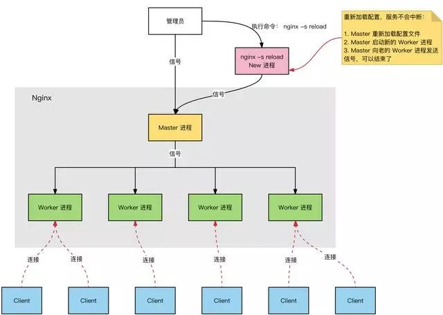
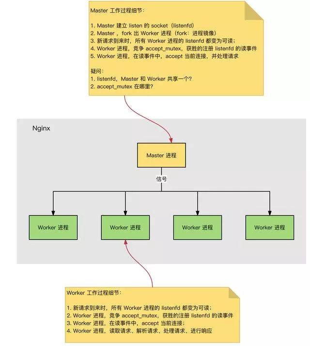
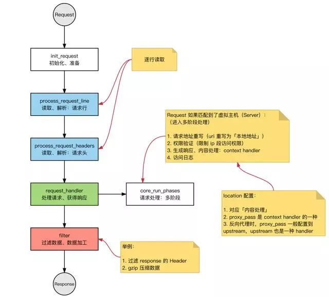
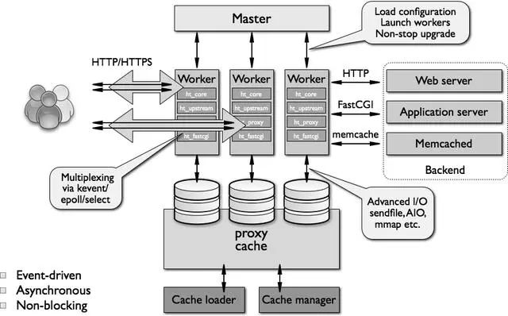

Nginx 是一个免费的，开源的，高性能的 HTTP 服务器和反向代理，以及 IMAP / POP3 代理服务器。Nginx 以其高性能，稳定性，丰富的功能，简单的配置和低资源消耗而闻名。本文从底层原理分析 Nginx 为什么这么快！
Nginx 的进程模型

Nginx 服务器，正常运行过程中：
- 多进程：一个 Master 进程、多个 Worker 进程。
- Master 进程：管理 Worker 进程。对外接口：接收外部的操作（信号）；对内转发：根据外部的操作的不同，通过信号管理 Worker；监控：监控 Worker 进程的运行状态，Worker 进程异常终止后，自动重启 Worker 进程。
- Worker 进程：所有 Worker 进程都是平等的。实际处理：网络请求，由 Worker 进程处理。Worker 进程数量：在 nginx.conf 中配置，一般设置为核心数，充分利用 CPU 资源，同时，避免进程数量过多，避免进程竞争 CPU 资源，增加上下文切换的损耗。
思考：
- 请求是连接到 Nginx，Master 进程负责处理和转发？
- 如何选定哪个 Worker 进程处理请求？请求的处理结果，是否还要经过 Master 进程？

HTTP 连接建立和请求处理过程
HTTP 连接建立和请求处理过程如下：
- Nginx 启动时，Master 进程，加载配置文件。
- Master 进程，初始化监听的 Socket。
- Master 进程，Fork 出多个 Worker 进程。
- Worker 进程，竞争新的连接，获胜方通过三次握手，建立 Socket 连接，并处理请求。
Nginx 高性能、高并发
Nginx 为什么拥有高性能并且能够支撑高并发？
- Nginx 采用多进程+异步非阻塞方式（IO 多路复用 Epoll）。
- 请求的完整过程：建立连接→读取请求→解析请求→处理请求→响应请求。
- 请求的完整过程对应到底层就是：读写 Socket 事件。
Nginx 的事件处理模型
Request：Nginx 中 HTTP 请求。
基本的 HTTP Web Server 工作模式：
- 接收请求：逐行读取请求行和请求头，判断段有请求体后，读取请求体。
- 处理请求。
- 返回响应：根据处理结果，生成相应的 HTTP 请求（响应行、响应头、响应体）。
Nginx 也是这个套路，整体流程一致：

模块化体系结构

Nginx 的模块根据其功能基本上可以分为以下几种类型：
①event module：搭建了独立于操作系统的事件处理机制的框架，及提供了各具体事件的处理。包括 ngx_events_module，ngx_event_core_module 和 ngx_epoll_module 等。
Nginx 具体使用何种事件处理模块，这依赖于具体的操作系统和编译选项。
②phase handler：此类型的模块也被直接称为 handler 模块。主要负责处理客户端请求并产生待响应内容，比如 ngx_http_static_module 模块，负责客户端的静态页面请求处理并将对应的磁盘文件准备为响应内容输出。
③output filter：也称为 filter 模块，主要是负责对输出的内容进行处理，可以对输出进行修改。
例如，可以实现对输出的所有 html 页面增加预定义的 footbar 一类的工作，或者对输出的图片的 URL 进行替换之类的工作。
④upstream：upstream 模块实现反向代理的功能，将真正的请求转发到后端服务器上，并从后端服务器上读取响应，发回客户端。
upstream 模块是一种特殊的 handler，只不过响应内容不是真正由自己产生的，而是从后端服务器上读取的。
⑤load-balancer：负载均衡模块，实现特定的算法，在众多的后端服务器中，选择一个服务器出来作为某个请求的转发服务器。
常见问题剖析
Nginx vs Apache
Nginx：
- IO 多路复用，Epoll（freebsd 上是 kqueue）
- 高性能
- 高并发
- 占用系统资源少
Apache：
- 阻塞+多进程/多线程
- 更稳定，Bug 少
- 模块更丰富
参考文章：
http://www.oschina.net/translate/nginx-vs-apache
https://www.zhihu.com/question/19571087
Nginx 最大连接数
基础背景：
- Nginx 是多进程模型，Worker 进程用于处理请求。
- 单个进程的连接数（文件描述符 fd），有上限（nofile）：ulimit -n。
- Nginx 上配置单个 Worker 进程的最大连接数：worker_connections 上限为 nofile。
- Nginx 上配置 Worker 进程的数量：worker_processes。
因此，Nginx 的最大连接数：
- Nginx 的最大连接数：Worker 进程数量 x 单个 Worker 进程的最大连接数。
- 上面是 Nginx 作为通用服务器时，最大的连接数。
- Nginx 作为反向代理服务器时，能够服务的最大连接数：（Worker 进程数量 x 单个 Worker 进程的最大连接数）/ 2。
- Nginx 反向代理时，会建立 Client 的连接和后端 Web Server 的连接，占用 2 个连接。
思考：
- 每打开一个 Socket 占用一个 fd？
- 为什么，一个进程能够打开的 fd 数量有限制？
HTTP 请求和响应
HTTP 请求：
- 请求行：method、uri、http version
-请求头
- 请求体
HTTP 响应：
响应行：http version、status code
响应头
响应体
IO 模型
处理多个请求时，可以采用：IO 多路复用或者阻塞 IO+多线程：
- IO 多路复用：一个线程，跟踪多个 Socket 状态，哪个就绪，就读写哪个。
- 阻塞 IO+多线程：每一个请求，新建一个服务线程。
IO 多路复用和多线程的适用场景？
- IO 多路复用：单个连接的请求处理速度没有优势。
- 大并发量：只使用一个线程，处理大量的并发请求，降低上下文环境切换损耗，也不需要考虑并发问题，相对可以处理更多的请求。
- 消耗更少的系统资源（不需要线程调度开销）。
- 适用于长连接的情况（多线程模式长连接容易造成线程过多，造成频繁调度）。
- 阻塞 IO +多线程：实现简单，可以不依赖系统调用。
- 每个线程，都需要时间和空间。
- 线程数量增长时，线程调度开销指数增长。
select/poll 和 epoll 比较
详细内容，参考：
https://www.cnblogs.com/wiessharling/p/4106295.html
select/poll 系统调用：
// select 系统调用
int select(int maxfdp,fd_set *readfds,fd_set *writefds,fd_set *errorfds,struct timeval *timeout);
// poll 系统调用
int poll(struct pollfd fds[], nfds_t nfds, int timeout)；
select：
- 查询 fd_set 中，是否有就绪的 fd，可以设定一个超时时间，当有 fd (File descripter) 就绪或超时返回。
- fd_set 是一个位集合，大小是在编译内核时的常量，默认大小为 1024。
- 特点：连接数限制，fd_set 可表示的 fd 数量太小了；线性扫描：判断 fd 是否就绪，需要遍历一边 fd_set；数据复制：用户空间和内核空间，复制连接就绪状态信息。
poll：
- 解决了连接数限制：poll 中将 select 中的 fd_set 替换成了一个 pollfd 数组，解决 fd 数量过小的问题。
- 数据复制：用户空间和内核空间，复制连接就绪状态信息。
epoll，event 事件驱动：
- 事件机制：避免线性扫描，为每个 fd，注册一个监听事件，fd 变更为就绪时，将 fd 添加到就绪链表。
- fd 数量：无限制（OS 级别的限制，单个进程能打开多少个 fd）。
select，poll，epoll：
- I/O 多路复用的机制。
- I/O 多路复用就通过一种机制，可以监视多个描述符，一旦某个描述符就绪（一般是读就绪或者写就绪），能够通知程序进行相应的读写操作；监视多个文件描述符。
- 但 select，poll，epoll 本质上都是同步 I/O：用户进程负责读写（从内核空间拷贝到用户空间），读写过程中，用户进程是阻塞的；异步 IO，无需用户进程负责读写，异步 IO，会负责从内核空间拷贝到用户空间。
Nginx 的并发处理能力
关于 Nginx 的并发处理能力：并发连接数，一般优化后，峰值能保持在 1~3w 左右。（内存和 CPU 核心数不同，会有进一步优化空间）